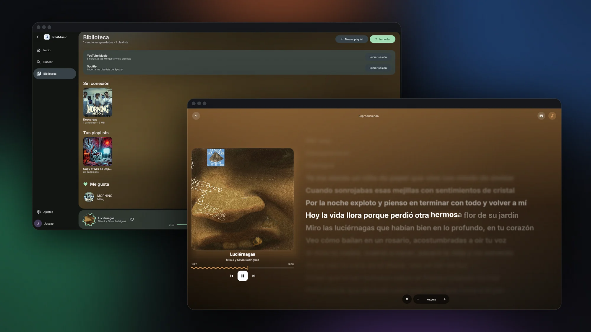
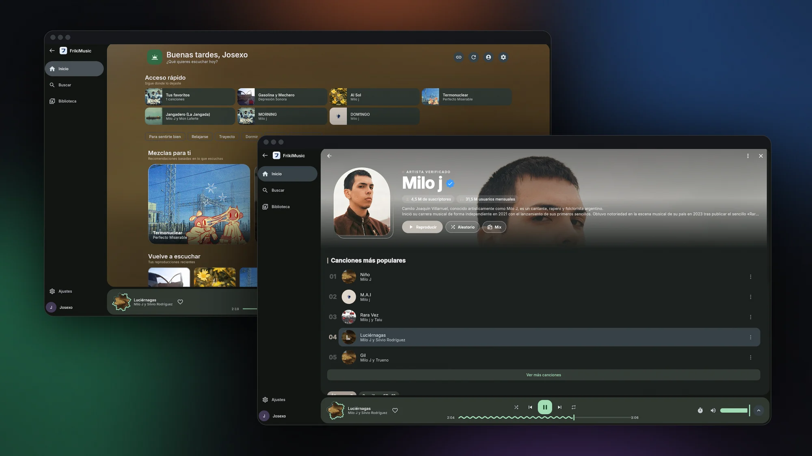
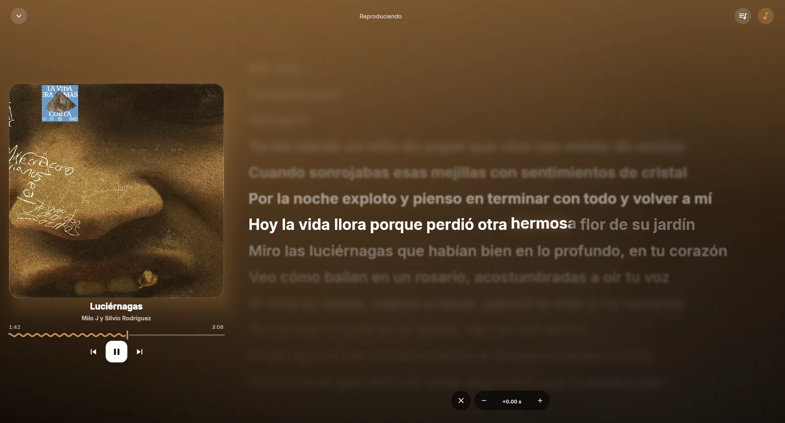
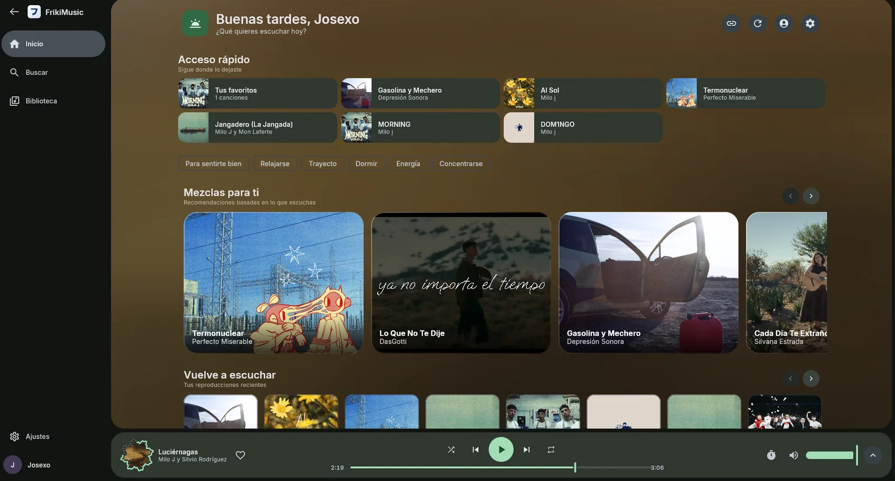
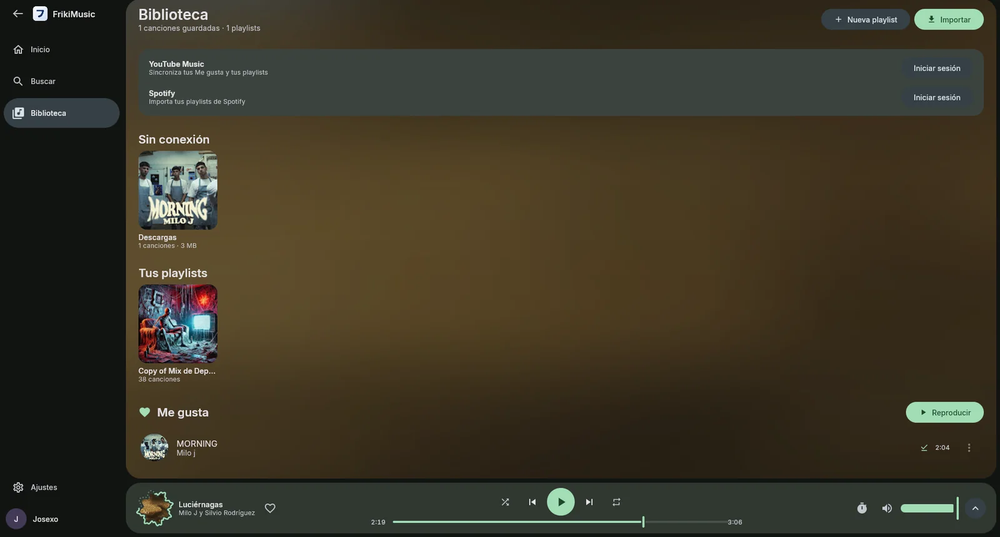
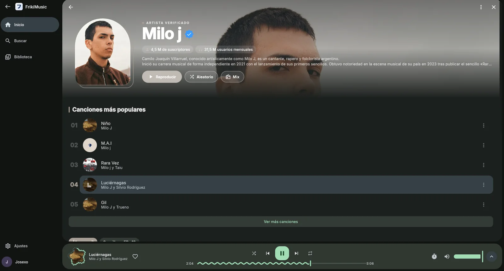
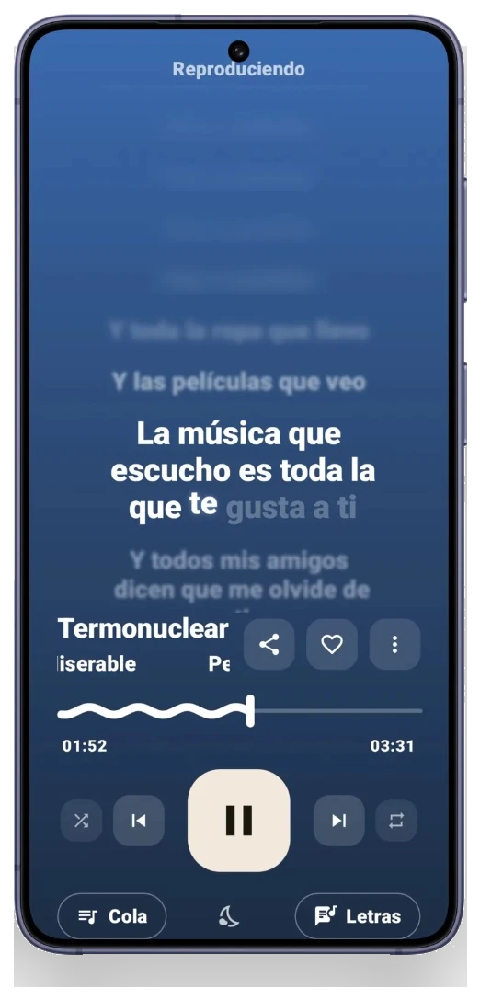
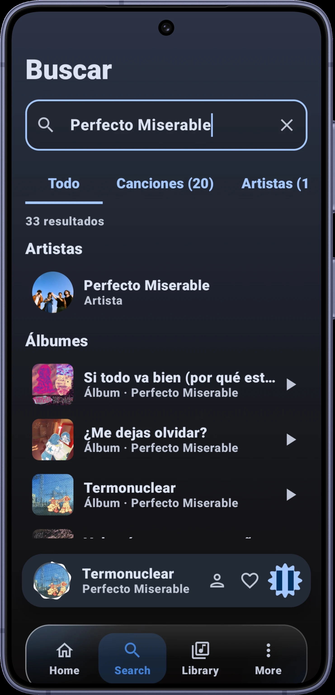
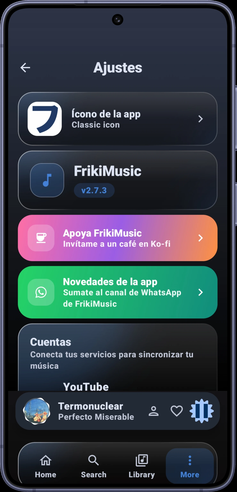
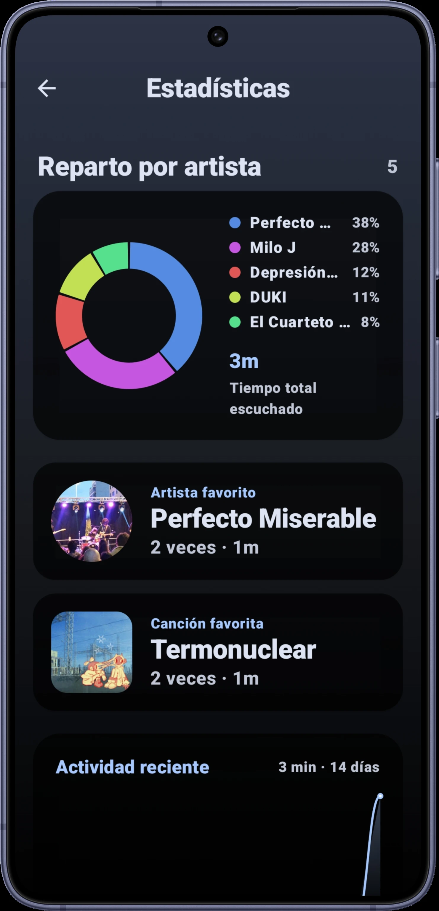

Letras sincronizadas y traducidas
La letra avanza línea a línea con la canción y puedes verla traducida sin salir del reproductor.
Aplicación para Android
Reproductor de música gratis, con interfaz hecha con Material 3, para Android.
Letras traducidas y sincronizadas línea a línea, streaming y descargas, y una interfaz que cambia de color según lo que estás escuchando.
Ya para Windows · Descargar la versión de PC · Linux y macOS próximamenteWindows disponible · Linux y macOS próximamente
FrikiMusic para PC
Dos vistas de la ventana principal y, debajo, un escritorio de pruebas: arrastra las ventanas, tráelas al frente o ábrelas a pantalla completa.


Arrastra o desliza a los lados y toca una ventana para verla en grande.




01 / 04
Pantalla completa con la letra sincronizada, desenfoque progresivo en las líneas vecinas y ajuste fino del desfase.
Características
Qué puedes hacer con FrikiMusic.
La letra avanza línea a línea con la canción y puedes verla traducida sin salir del reproductor.
El color predominante de la carátula, no el más llamativo, define el tema del reproductor.
Reproduce en línea o descarga canciones, sin depender de una biblioteca local.
Desliza hacia arriba para ver la letra, a los lados para cambiar de canción y hacia abajo para cerrar.
Tu perfil muestra lo que estás escuchando en tiempo real, sin configurar nada.
Los artistas, álbumes y canciones que más escuchas, según tu tiempo de reproducción.
Conecta tus cuentas desde Ajustes para sincronizar tu biblioteca y tu actividad.
Componentes, tipografía y animaciones basados en las guías de Material Design 3.
Dentro de la app
Desliza, arrastra o usa las flechas: son las pantallas reales donde pasarás más tiempo. Toca una para verla en grande.




01 / 06
Portada protagonista, controles amplios y un color de fondo que nace de la propia carátula. La barra inferior usa un acabado líquido y discreto.
Proyecto propio, 100% gratuito y sin anuncios para el público.

Josexo
Desarrollador de FrikiMusic
Escríbeme tu comentario, idea o problema.
Descargas
La última versión estable, lista para instalar.
Paquete de instalación directa (APK), fuera de Google Play.
Requiere Android 8.0 o superior.
Aplicación de escritorio con instalador (.exe).
Requiere Windows de 64 bits. Se instala sin permisos de administrador.
Versión de escritorio para distribuciones Linux.
Versión de escritorio para Mac.